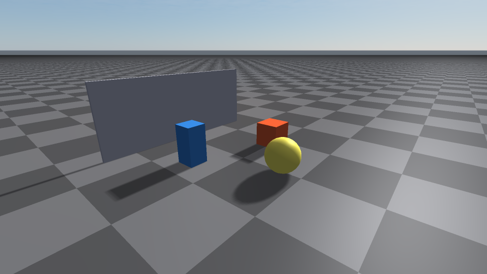
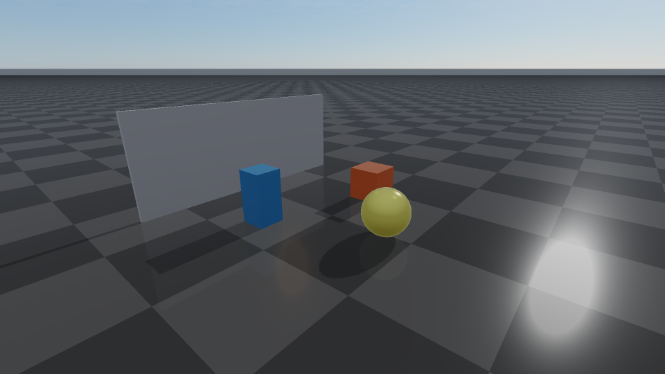
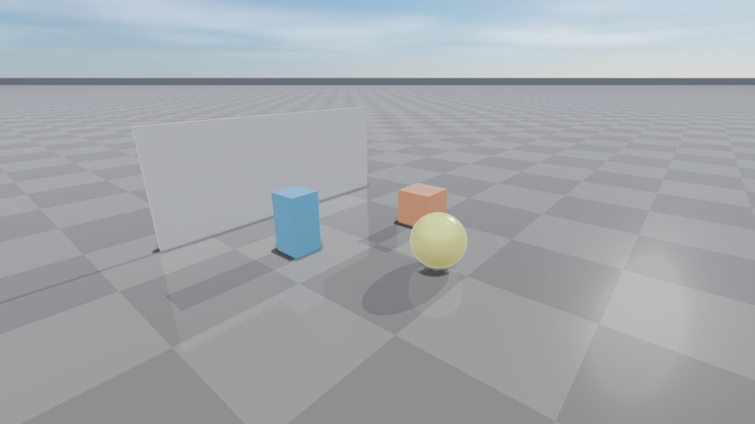
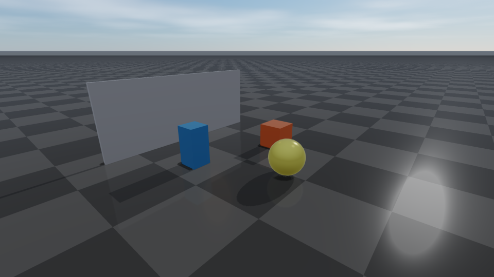
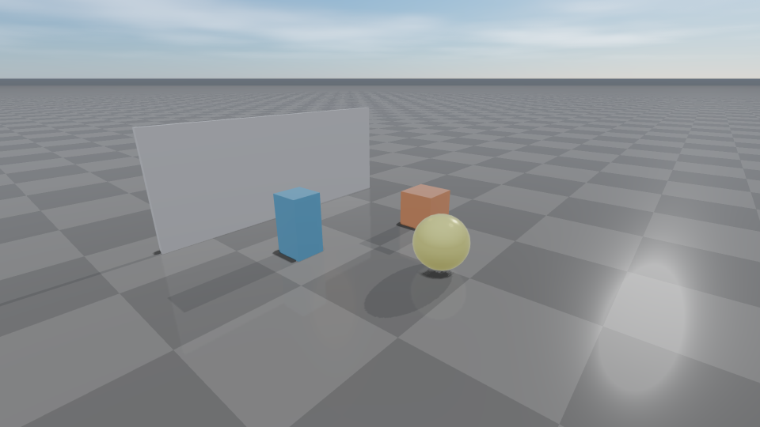
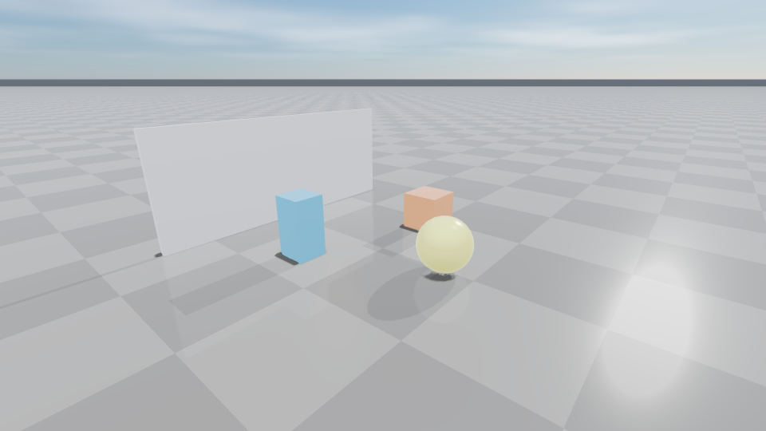
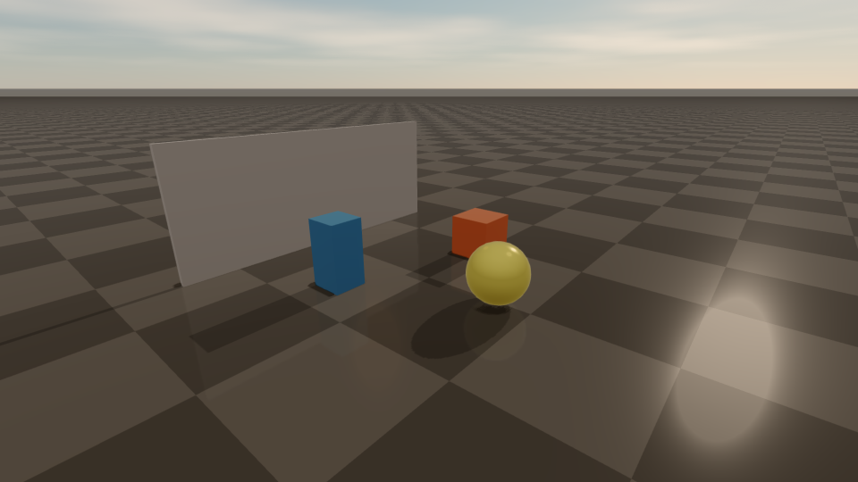
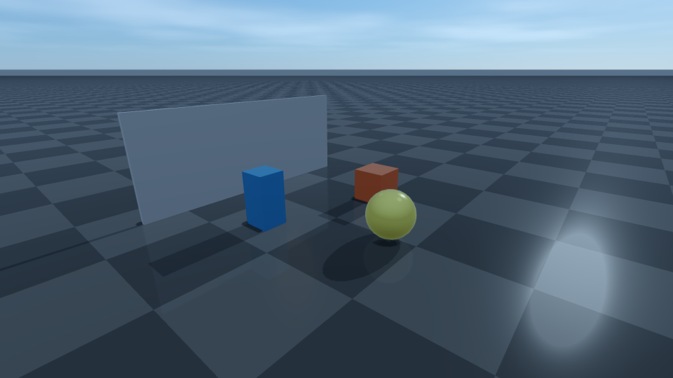
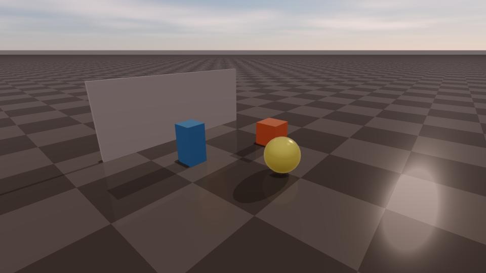
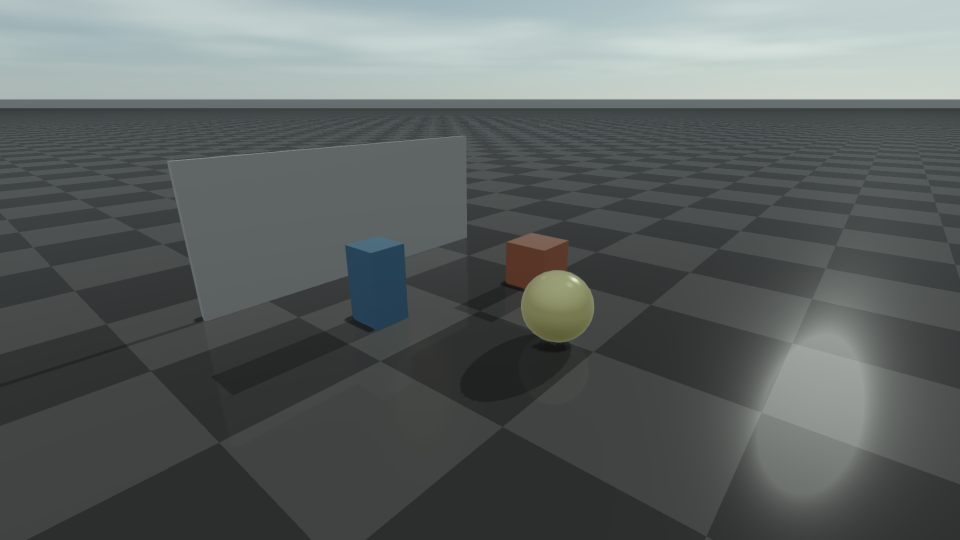

Render quality, tone mapping, color grading
RenderQualitySettings is the single struct that drives the renderer’s
behaviour each frame. Pick a preset for the common cases, then override
individual flags for the effects you need. Other pages cover narrower
subsets of this struct: Post-process effects for cinematic and screen-space
effects, Weather and atmospherics for atmospheric state, and Lighting, shadows, and HDR/IBL for
shadow/light budgets.
Color and gamma semantics
rayrai applies display gamma at the shader/output stage; do not pre-gamma-correct linear colours before passing them in. The convention:
Visuals::setColorand most object/material color factors use linear0..1RGBA.Camera::setBackgroundColorRgb255andRayraiWindow::setBackgroundColorRgb255use legacy0..255RGBA.setBackgroundColoris kept as a compatibility wrapper for the same0..255range.setBackgroundColorLinearaccepts linear0..1RGBA and converts it internally.Texture uploads distinguish color maps and data maps. Use
loadColorTextureWithTilingfor sRGB albedo/emissive maps, andloadDataTextureWithTilingfor normal, metallic-roughness, AO, depth, mask, or other linear data textures.
// Linear object colours (0..1 floats).
sphere->setColor(glm::vec4(0.95f, 0.43f, 0.12f, 1.0f));
// Background: pick the API that matches your colour range.
viewer.setBackgroundColorRgb255({40, 45, 55, 255}); // 0..255 sRGB
viewer.setBackgroundColorLinear({0.157f, 0.176f, 0.216f, 1}); // 0..1 linear
// Texture uploads distinguish colour maps from data maps:
unsigned int albedo = raisin::RayraiWindow::loadColorTextureWithTiling(
"/path/wood_albedo.png"); // treated as sRGB
unsigned int normal = raisin::RayraiWindow::loadDataTextureWithTiling(
"/path/wood_normal.png"); // treated as linear data
unsigned int roughness = raisin::RayraiWindow::loadDataTextureWithTiling(
"/path/wood_orm.png"); // treated as linear data
Render-quality controls
rayrai keeps RL throughput and visual fidelity separate. The Fast preset keeps
reflections, high-fidelity PBR, FXAA, and extra expensive viewer effects off by default.
Balanced now uses the PBR + IBL path and a reflective checker ground, but
still leaves the heavier High/Ultra effects off. High and Ultra enable
the quality-oriented path, including stronger shadow filtering, FXAA,
additional screen-space effects, and depth-of-field postprocessing.
Every preset is tuned so directional shadows are readable out of the box while smooth and metallic materials still receive enough sky/IBL fill. Balanced and High use brighter ambient/environment defaults than older releases; Ultra keeps a lower direct ambient with stronger IBL and AgX tone mapping. You should not need to tweak ambient/diffuse/shadow values for a readable outdoor scene.
The reflective checker ground is on by default for Balanced, High, and
Ultra (reflectiveGround = true plus the PBR path) and off for Fast.
Heightmap terrain is intentionally excluded from the planar reflective-ground
policy; it uses a rough, non-reflective PBR terrain material even when
reflectiveGround is enabled.
Use presets for common cases:
viewer.setRenderQualityPreset(raisin::RayraiWindow::RenderQualityPreset::Fast);
viewer.setRenderQualityPreset(raisin::RayraiWindow::RenderQualityPreset::Ultra);
Use explicit settings when you need runtime control:
auto quality = raisin::RayraiWindow::defaultRenderQualitySettings(
raisin::RayraiWindow::RenderQualityPreset::Ultra);
quality.fxaaEnabled = true;
quality.depthOfFieldEnabled = true;
quality.depthOfFieldFocusDistance = 5.0f;
quality.depthOfFieldFocusRange = 8.0f;
quality.depthOfFieldMaxRadius = 1.25f;
quality.reflectiveGround = true;
quality.addViewerFillLights = false;
viewer.setRenderQualitySettings(quality);
The shipped rayrai examples, including rayrai_pbr_material_grid,
rayrai_quality_lighting, and rayrai_complete_showcase, exercise these
controls in runnable scenes.
Fast |
Balanced |
|---|---|
 |
 |
High |
Ultra |

|
 |
These four images are produced by doc_image_quality_presets in
docs/image_generators/ and are regenerated automatically as part of the
Sphinx build target.
Tone mapping, exposure, and color grading
The viewer color pipeline is driven by RenderQualitySettings. Tone mapping is
selected by colorMode (ViewerColorMode): FastLinear (no tone curve),
AcesApprox (ACES-fitted), UnrealPreviewApprox, FilmicApprox, and
AgXApprox. Exposure is controlled by pbrExposure plus an optional
auto-exposure loop (autoExposureEnabled, autoExposureKey,
autoExposureSpeed, autoExposureMinFactor, autoExposureMaxFactor)
that drives exposure toward a target post-tonemap luma. White balance and
saturation use viewerWhiteBalance and viewerSaturation.
auto quality = viewer.getRenderQualitySettings();
// Pick the tone curve.
quality.colorMode = raisin::ViewerColorMode::AcesApprox;
quality.pbrToneMapping = true;
quality.pbrExposure = 1.0f;
// Auto-exposure: target mid-gray luma 0.18 at moderate adaptation speed.
quality.autoExposureEnabled = true;
quality.autoExposureKey = 0.18f;
quality.autoExposureSpeed = 0.05f;
quality.autoExposureMinFactor = 0.10f;
quality.autoExposureMaxFactor = 6.0f;
// White balance + saturation tweaks (applied before grading).
quality.viewerWhiteBalance = glm::vec3(1.02f, 1.00f, 0.96f); // slightly warm
quality.viewerSaturation = 1.05f;
// ASC-CDL grade applied at the end of the post-process chain.
quality.viewerColorGradePreset = raisin::ColorGradePreset::Cinematic;
quality.viewerColorGradeStrength = 0.8f;
viewer.setRenderQualitySettings(quality);
The five tone-mapping curves render the same scene very differently — flat linear preserves source intensity but rolls off bright surfaces; ACES and Filmic compress highlights cinematically; AgX trades a slightly desaturated look for cleaner skin tones; UnrealPreview matches the engine reference:
FastLinear |
ACES |
|---|---|

|
|
UnrealPreview |
Filmic |
 |
 |
AgX |
|
 |
ASC-CDL color grading is applied at the end of the post-process chain. Pick a
preset with viewerColorGradePreset (Neutral, Warm, Cool,
Cinematic, Bleach) and blend it with the ungraded image using
viewerColorGradeStrength. gamma overrides display gamma when needed.
Neutral |
Warm |
|---|---|

|
 |
Cool |
Cinematic |
 |
 |
Bleach |
|
 |
The tone-mapping grid is produced by doc_image_tone_mapping and the grade
grid by doc_image_color_grading in docs/image_generators/.
For batch capture, the static helpers analyzeRgbaLuminance,
recommendExposure, and smoothExposure (see Exposure, calibration, and
output transforms below) drive automatic exposure adjustment without touching
renderer state directly.
Adaptive quality and texture budgets
For long-running applications and offline pipelines, two static helpers convert measured timings or memory budgets into recommended settings without mutating the renderer:
recommendDynamicQuality(currentSettings, preset, timings)looks at GPU pass timings (fromcaptureRenderPassTimings) and proposes a render-scale, shadow-update cadence, bloom/SSAO quality, and target frame time. The result is aDynamicQualityRecommendationwith bottleneck flags (fillRate/shadow/postprocess) and a human-readable reason.recommendMaterialTextureBudget(budgetBytes)proposes texture formats/filters and which slots can fall back when the asset set exceeds a byte budget. The result describes what would be changed; the application decides whether to apply it.
// Measure once per second of headroom.
raisin::RayraiWindow::RenderOverrides ov;
auto timings = viewer.captureRenderPassTimings(viewer.getCamera(), ov);
auto rec = raisin::RayraiWindow::recommendDynamicQuality(
viewer.getRenderQualitySettings(),
raisin::RayraiWindow::RenderQualityPreset::High,
timings);
if (rec.fillRateBottleneck) {
auto q = viewer.getRenderQualitySettings();
q.viewerRenderScale = rec.recommendedRenderScale; // e.g. 0.85
q.updateShadowsEveryFrame = rec.updateShadowsEveryFrame;
viewer.setRenderQualitySettings(q);
std::printf("Adaptive: %s\n", rec.reason.c_str());
}
// Texture budget recommendation for a 512 MiB target.
auto budget = raisin::RayraiWindow::recommendMaterialTextureBudget(
/*budgetBytes=*/512ull * 1024 * 1024);
// budget.recommendedFilter / .recommendedFormat tell you what to lower.